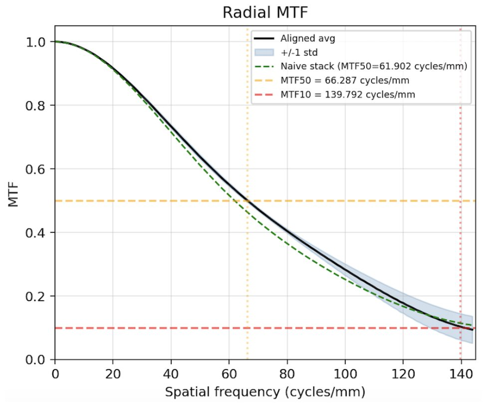
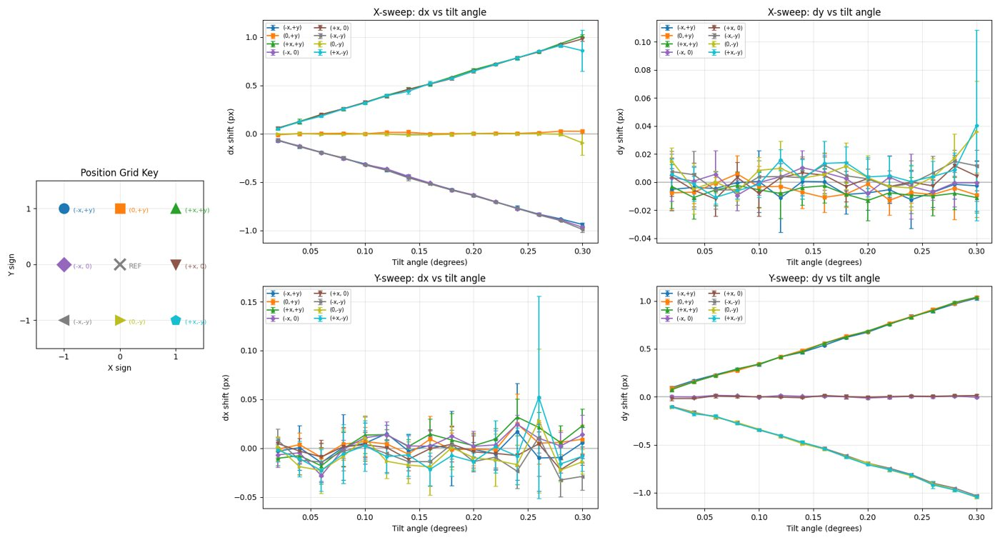
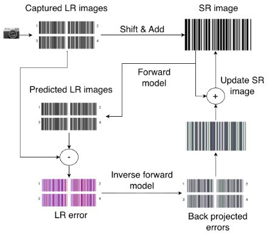
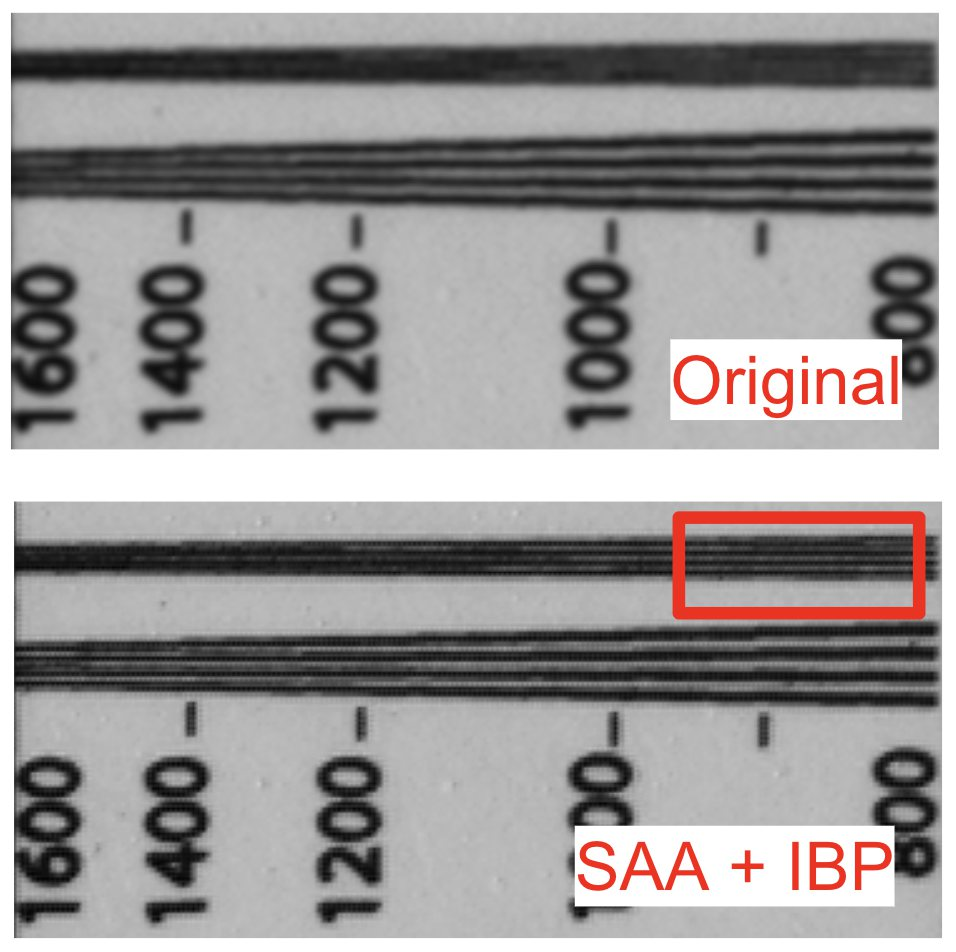
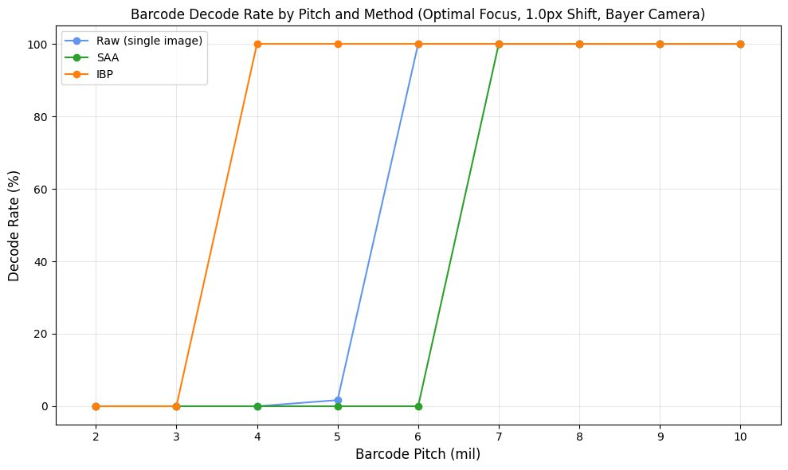

Amazon Robotics: Super-Resolution Barcode Scanning
ENPH 459 capstone, sponsored by Amazon Robotics (2025–2026), with Benedikt Howard, Josh Bermel and Shuyu van Kerkwijk. Warehouse robots lose time every time a barcode fails to decode, and replacing cameras across a fleet is expensive. We tested whether an add-on beam-shifting actuator plus multi-frame reconstruction could get more resolution out of the cameras already deployed.
The idea
An Optotune XPR-20 tilts a thin glass window between the lens and the sensor, shifting the image by a fraction of a pixel. Four frames at half-pixel offsets sample the scene on a grid twice as dense in each direction, which in principle doubles the Nyquist limit. Because the shifts are commanded rather than random, the reconstruction does not have to estimate them first.
The rig

Two details made the data trustworthy. The actuator controller raises a GPIO trigger once the window has settled (about 1.1 ms), which starts the camera exposure, so no frame is captured mid-move. And focus is found automatically by sweeping the stage and maximizing a sharpness metric: variance of the Laplacian for printed targets, peak intensity for a 5 µm pinhole.
Characterizing the system first
Before any super-resolution, we measured what the optics could actually deliver. Imaging a backlit pinhole gave the point spread function, and its Fourier transform gave the MTF: contrast falls to 50% at 66 cycles/mm and to 10% at 139 cycles/mm, right at the monochrome sensor's Nyquist limit of 144.


Fitting a 2D Gaussian to the pinhole at each commanded tilt calibrated the shifts: highly linear, repeatable to 0.01–0.02 px, and under 0.05 px of cross-axis leakage. Under controlled conditions the actuator does exactly what super-resolution needs.
Reconstruction

Shift-and-Add upsamples each frame, places it on the fine grid at its calibrated offset, and averages. Iterative Backprojection then models image formation (blur, shift, downsample), simulates what the camera should have seen, and pushes the error back onto the high-resolution estimate for 80 iterations.
A Gaussian PSF kernel worked better than the measured one, because noise in the pinhole measurement is amplified by the deconvolution.
Results: it depends on the sensor
On the monochrome camera, reconstruction added nothing: edge profiles, MTFs and barcode decoding were identical with and without it. The MTF measurement explains why. The lens has already removed nearly all contrast above the sensor's Nyquist limit, so there is nothing left to recover.
On the Bayer camera, each colour channel samples at half density (72 cycles/mm), well below the optical cutoff. There, SAA+IBP resolved bars that the single frame blurred to grey, and moved the finest barcode decoded 100% of the time from 6 mil to 4 mil, matching the monochrome sensor. Decoding used ZXing-C++ with 25 jittered crops per barcode to get a confidence rather than a single pass/fail.


Why it isn't deployable (yet)
- Focus range. The actuator housing adds about 10 mm between lens and sensor, acting like an extension tube: usable depth of field collapsed to 7.7 mm at roughly 185 mm working distance.
- Vibration. Tapping the optical table raised frame-to-frame jitter 3.1×, from 0.15 to 0.47 px, about the size of the intended shifts. Once shifts must be estimated from the images anyway, a deterministic beam shifter offers no advantage over the random subpixel motion vibration already provides.
- Optics. Industrial lenses are usually matched to the sensor's Nyquist limit, so most existing cameras have the same lack of headroom as the monochrome one.
Our recommendation to Amazon Robotics was not to deploy this configuration, and to pursue super-resolution only with purpose-built optics: a lens with contrast above Nyquist, integrated beam shifting that keeps the correct flange distance, a stiffer mount, and GPU or learned reconstruction to bring IBP from tens of seconds per frame toward real time.
Stack: Python, OpenCV, NumPy/SciPy, ZXing-C++, Daheng camera SDK, Optotune XPR-20 and ICC-4C-2000, Zaber stages.